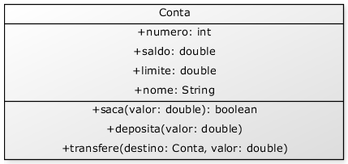
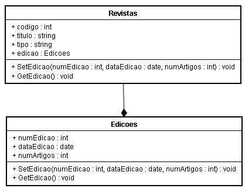
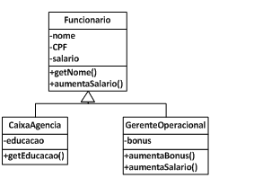
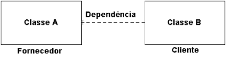
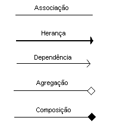

O que é
Em programação, um diagrama de classes é uma representação da estrutura e relações das classes que servem de modelo para objetos. É uma modelagem muito útil para o desenvolvimento de sistemas, pois define todas as classes que o sistema necessita possuir e é a base para a construção dos diagramas de comunicação, sequência e estados.
Por que usar
Ele representa as principais finalidades da UML, tendo a função de separar os elementos de design da codificação do sistema. Esta linguagem ajuda a modelar diversos subconjuntos de diagramas, incluindo diagramas de comportamento, interação e estrutura.
Conceitos
Conceitos básicos para o aprendizado do diagrama de classes.
Classe
Elemento abstrato que representa um conjunto de objetos. A classe contém a especificação do objeto; suas características: atributos (características) e métodos (ações / comportamentos).
Atributo
Define características da classe como:
Visibilidade:
- Pública, representada pelo símbolo: +, onde outras classes podem ter acesso ao atributo;
- Privada, representada pelo símbolo: -, o atributo somente é acessado diretamente pela própria classe e;
- Protegida, representada pelo símbolo: #, ou
- Pacote, representada pelo símbolo: ~, que é acessado pelo relacionamento da classe com a classe externa.
Tipo de dados: Tipo de dado do atributo.
Multiplicidade: Relacionamentos.
Valor inicial: Depende da linguagem de programação, valor opcional.
Propriedade: Características do elemento, opcional.
Método (Comportamentos)
Os métodos de uma classe são as "ações" que todos os objetos oriundos dessa classe podem fazer em comum.
Exemplo
Neste exemplo, temos a classe CONTA que possui os atributos:
E como métodos dessa classe:

Relações
Os objetos tem relações entre eles: um professor ministra uma disciplina para alunos numa sala, um cliente faz uma reserva de alguns lugares para uma data, etc. Essas relações são representadas também no diagrama de classe.Geralmente as classes não estão sós e se relacionam entre si. O relacionamento e a comunicação entre as classes definem responsabilidades , temos 3 tipos :
Associações : Agregação e composição, Generalização (herança), Dependências.
É um tipo especial de associação onde tenta-se demonstrar que as informações de um objeto (chamado objeto-todo) precisam ser complementados pelas informações contidas em um ou mais objetos de outra classe (chamados objetos-parte); conhecemos como todo/parte.
Uma composição tenta representar também uma relação todo - parte. No entanto, na composição o objeto-pai (todo) é responsável por criar e destruir suas partes. Em uma composição um mesmo objeto-parte não pode se associar a mais de um objeto-pai.

Uma classe filha irá surgir quando observarmos que uma classe pode ter sub-divisões, podendo gerar outras classes que possam ter características em geral igual a classe "Pai" mais as suas próprias, o processo de criar classes filhas é denominado de especialização, o contrário, denomina-se generalização.


Para você não confundir na hora de modelar ou visualizar outros diagramas, temos uma tabela que representa os tipos de setas e seus significados
